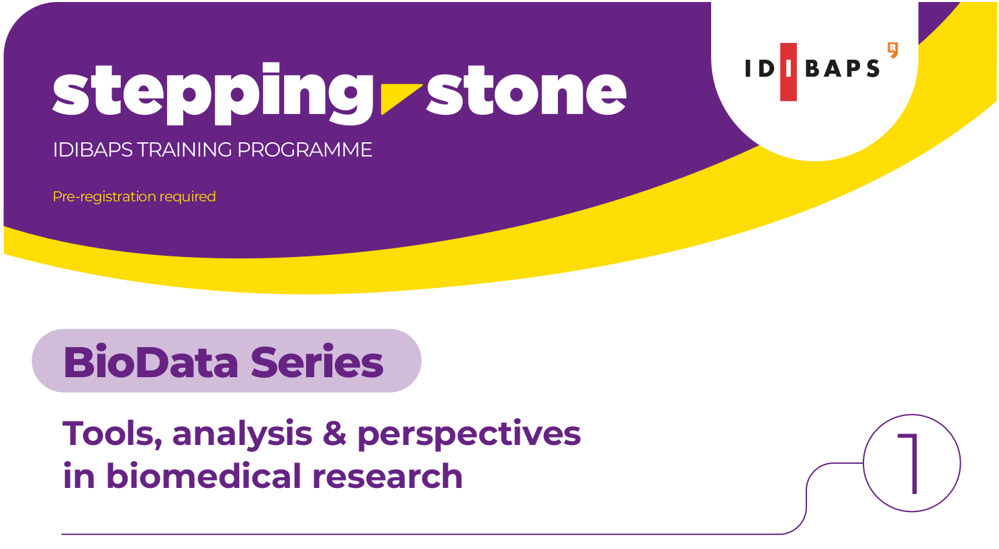

1. Introduction
In this exercise you will practice some of the essential tools for bioinformatics.
BASIC REQUIREMENTS
1. Super basic knowledge of the unix terminal
2. [RECOMMENDED] Visual Studio Code installed in your computer
OBJECTIVES
1. Managing large files: Modify compressed biological sequencing files
2. Safely transfer files: file transfer processes
3. MD5 checksums: Verify data integrity
4. Git, GitHub: Track your work with git
2. Repository
To follow this hands-on you will need to get a copy of this Stepping Stone's repository to your computer.2.1. Set up your repository
Follow these steps to make a clone of our repository in GitHub for the Stepping-Stone Hands-on:(1) Move to a directory in your laptop where you'd like to initialize the repository
(2) Open a terminal in that directory
(3) Check if Git is installed with
git --help
If not installed, run:
apt-get install git
(4) Clone the repository with the following instruction:
git clone https://github.com/FRCB-IDIBAPS/Stepping-Stone-1-Hands-On.git
stepping-stone-hands-on/
cd stepping-stone-hands-on/
(6) Configure Git credentials:
git config user.name [YOUR-USERNAME]
git config user.email [YOUR-INSTITUTION-EMAIL]
(7) Check the status of your repository by typing:
git status
Expected output:
On branch main
Your branch is up to date with 'origin/main'.
This means you are in the main branch and your local copy is up to date with the remote repository in GitHub.Currently, the repository contains one branch:
- main: default branch, with original version
(8) Create and switch to a new branch dedicated to this hands-on.:
git checkout -b [YOUR-USERNAME]
Switched to branch 'YOUR-USERNAME'
Your branch is up to date with 'origin/[YOUR-USERNAME]'.
Quickly check which branch you are on with:
git status
Now everything is set up to start the hands-on!
2.2. Inspecting the contents of the repository
Here we will walk through some of the most basic commands to navigate our working directory
BIG REMINDER
If at any point you lose track of where you are in the file system, simply run
pwd and it will print your current working directory
ls
We can use this command to list all files and folders in the current directorySee help with:
ls --help
Usage: ls [OPTION]... [FILE]...
List information about the FILEs (the current directory by default).
Sort entries alphabetically if none of -cftuvSUX nor --sort is specified.
Mandatory arguments to long options are mandatory for short options too.
-l use a long listing format
-h, --human-readable with -l and -s, print sizes like 1K 234M 2G etc.
-L, --dereference when showing file information for a symbolic
link, show information for the file the link
references rather than for the link itself
Examples:
ls -l
ls -lh
QUICK TEST
What is the difference between these two commands?
Answer
The first command lists all files and folders in the current directory with detailed information (permissions, owner, size in bytes, modification date, etc.). The second command does the same but displays file sizes in a human-readable format (e.g., KB, MB, GB) instead of bytes.
tree
We can use this command to display the structure of our current working directoryIf not installed, run:
sudo apt install tree
See help with:
tree --help
usage: tree [-L level [-R]] [...]
------- Listing options -------
-a All files are listed.
-d List directories only.
-L level Descend only level directories deep.
QUICK TEST
Which parameters do I need to flag after calling tree command to view ONLY directories with depth=2?
Answer
tree -d -L 2
code
If you have Visual Studio Code installed, with this commando you can open the code editor from your current working directory.Open it with:
code .
QUICK TEST
Do you know what the dot (.) stands for in this command?
Answer
It tells VSCode which directory you want it to launch from. The dot represents the current directory.
RECOMMENDED
From now on you can now follow the Stepping-Stone from the integrated terminal in Visual Studio Code.
mkdir
With this command we can create new directories. We will use it to create the destination folder of our file operationSince we want our directory to be named:
compressed/
mkdir compressed
cd
With this command we can navigate directories.We can use it to access the directory that contains our FASTQ files in the following way:
cd raw/
QUICK TEST
Once we have moved to raw folder. How can we check which files are contained within this directory and their sizes?
Answer
ls -lh
head
With this command we print the firstn (default=10) lines of each FILE to standard output
Let's try an example with file
01.fastq
head -n 16 01.fastq
HARD TEST
Knowing pwd command outputs: [YOUR-OWN-PATH]/stepping-stone-hands-on/raw
1. What's the absolute and relative path of 01.fastq file?
2. What's the relative path of this guide .HTML guide?
Answer
1A - absolute path: [YOUR-OWN-PATH]/stepping-stone-hands-on/raw/01.fastq
1B - relative path: ./01.fastq
2 - relative path: ../stepping_stone_bioinformatics.html
3. Compressing files
In this section we will compress FASTQ files to reduce file transfer times while preserving file integrity. For that we will be working with:gzip
From our raw directory (where we should be still), let's compress one of the FASTQ files:
gzip 01.fastq
Observe the newly generated file. As you brilliantly observed, the uncompressed file has been deleted.
QUICK TEST
Picture a scenario in which both files are necessary.
How can we compress a FASTQ while preserving the original uncompressed file?
Hint: check --help menu from the command
Answer
gzip -k 01.fastq
Now, to decompress our file and retrieve the original, we can use:
gunzip
Let's warm up our coding skills with a simple exercise:
EXERCISE 1
1. Decompress 01.fastq.gz
2. Compress again the same FASTQ file, only this time preserving the original uncompressed format.
3. Can you think of a way to compress all files in our working directory within a simple line of code?
We'd like to preserve all original files
Answer
gunzip 01.fastq.gz
gzip -k 01.fastq
gzip -k *
QUICK TEST
After running the gzip command for Exercise 1.3, some of you may have received the following message in the terminal:
gzip: 01.fastq.gz already exists; do you wish to overwrite (y or n)?
Can you guess why?
Answer
Because compressed 01.fastq.gz already exists
We have successfully compressed all the files in our directory. Now, let's take a look at how much these files have reduced in size after compression.
EXERCISE 2
1. How can we check the sizes of the compressed and uncompressed files?
2. Currently, the file size of the compressed files is six times smaller. Is it possible to make them even smaller, and if so, how?
Answer
Exercise 1.1.
ls -lh
Exercise 1.2. gzip command allows to specify compression level. See gzip --help for more information.
gzip --help
Usage: gzip [OPTION]... [FILE]...
Compress or uncompress FILEs (by default, compress FILES in-place).
Mandatory arguments to long options are mandatory for short options too.
-1, --fast compress faster
-9, --best compress better
gzip -k9 *
4. Wildcards
Standard wildcards (globbing patterns)
The answer to Excercise 1.3 implied the use of a wildcard character (en español, comodín) that match multiple files. Commands can use standard wildcards (also known as globbing patterns) to perform actions on more than one file at a time, or to find part of a phrase in a text file.For more information on basic wildcards, we can consult page 7 of Linux Programmer's Manual - GLOB section.
To do this, we can type:
man 7 glob
Wildcard matching
A string is a wildcard pattern if it contains one of the characters
'?', '*' or '['. Globbing is the operation that expands a wildcard
pattern into the list of pathnames matching the pattern. Matching is
defined by:
A '?' (not between brackets) matches any single character.
A '*' (not between brackets) matches any string, including the empty
string.
[...]
EXERCISE 3
1. Using '*' wildcard, print the first line of all FASTQ files in our working directory
2. Do the same exercise, only this time with '?' wildcard instead.
3. In our case, our raw folder is populated only by FASTQ files. How should we use '*' wildcard if we had multiple files of different extensions?
Answer
head -n 1 *
head -n 1 0?.fastq
head -n 1 *.fastq
5. MD5 checksum
As mentioned at the beginning, our primary objective 🎯 is to copy the compressed files to our input directory:compressed/
md5sum
This is the command we will use to calculate and verify file integrity, essentially by hashing input files (I.e. assigning alphanumeric string). These unique strings will act as a digital fingerprint of our FASTQ files to ensure data integrity after transfer. First, to hash our compressed FASTQ files, let's runmd5sum *.gz > checksums.md5
HARD TEST
Is the chunk of code > checksums.md5 one of the standard inputs md5sum command expects?
Do you know what output redirection consists of?
Answer
No, these are not standard inputs to md5sum.
By default, commands print their results (called standard output - stdout) to the terminal screen.
Alternatively, the redirection operator (>) takes that sdtout and dumps it into a file instead of the screen.
Output redirection
As detailed in the previous exercise, output redirection dumps the content that a command would normally print in your terminal screen into a file
There are multiple redirection operators, here we show you a cheat sheet of the most common ones:
| Operator | Purpose |
|---|---|
| > | Redirects stdout to a file. If the file exists, it will overwrite. |
| >> | Appends stdout to a file. Will never overwrite. |
| 2> | Redirects stderr to a file. If the file exists, it will overwrite. |
| 2>> | Appends stderr to a file. Will never overwrite. |
| &> | Redirects both stdout and stderr to a file. If the file exists, it will overwrite. |
| &>> | Appends both stdout and stderr to a file. Will never overwrite. |
Now, to quickly check the content of that file, we will use:
cat
Explanation:
Usage: cat [OPTION]... [FILE]...
Concatenate FILE(s) to standard output.
This command allows to print the content of the input file in our terminal.
cat checksums.md5
gzip):
5177a1a1998c3c88e49560c577288e51 01.fastq.gz
e4c0d5caca9d6a3ab41a6853d4468fcc 02.fastq.gz
acb717129a738472446e47632ad12c02 03.fastq.gz
4e17ac1a592281cacfacb63ecce33c5f 04.fastq.gz
It contains what we called the digital fingerprints (unique 32-character alphanumeric string) of each of the compressed FASTQ file.
Now, let's start the file transfer process. For that, we will use:
cp
See help manual:
Usage: cp [OPTION]... [-T] SOURCE DEST
or: cp [OPTION]... SOURCE... DIRECTORY
or: cp [OPTION]... -t DIRECTORY SOURCE...
Copy SOURCE to DEST, or multiple SOURCE(s) to DIRECTORY.
For this command, usage says we need:
cp [OPTION-ARGUMENTS] [path-to-source-file/s] [path-to-destination-dir]
EXERCISE 4
Following the previous use case, how should we:
1. Define [path-to-source-file/s]
2. Define [path-to-destination-dir] from our working directory?
Can you please construct the complete line of code to perform the file transfer?
Answer
*.gz
../compressed
cp *.gz ../compressed
From our newly populated folder, let's check if file integrity has been preserved during transfer.
QUICK TEST
How can we navigate to our file compressed/ from where we are?
Answer
cd ../compressed
md5sum -c ../raw/checksums.md5
01.fastq.gz: OK
02.fastq.gz: OK
03.fastq.gz: OK
04.fastq.gz: OK
QUICK TEST
It seems that md5sum has different usages. Before, it hashed our FASTQ files.
Now, it verified file integrity of our new FASTQ files.
Which argument/s made md5sum perform differently now?
Answer
-c, --check read MD5 sums from the FILEs and check them
GENTLE REMINDER OF WORK CONDUCTED
Here's a brief rundown of what we did:
1. Compress FASTQ files
2. Hash our compressed (.gz) FASTQ files [digital fingerprints]
3. Perform file transfer with cp command
4. Check file integrity in destination with md5sum
6. Pipeline development with version control
In the final section of the Stepping-Stone, we will combine all the steps we have practised so far into a single script that can automate the file transfer process for any given input. Once our script is complete, we will commit it to our repository using Git and therefore have a record of our first version of the workflow.6.1. Basic commands with git
Let's move back to the repository folder. In order to do so, please check first your working directory.
QUICK TEST
Please move to folder stepping-stone-hands-on.
Answer
Option 1: Using absolute path
cd [YOUR-OWN-PATH]/BiodataSeries/stepping-stone-hands-on/
Option 2: Navigating the repo
Use the pwd command to print the current working directory.
Then, based on that path, decide how many levels to descend. Examples:
cd .. #descend 1 level
cd ../.. #descend 2 levels
git
Git is a version control system that enables you to track changes to files and manage different versions of the same project when working with teammates.It works like a 'time machine', enabling you to take snapshots of the code and move back and forth between older and newer versions.
We can take a look at its usage:
git --help
start a working area (see also: git help tutorial)
clone Clone a repository into a new directory
work on the current change (see also: git help everyday)
add Add file contents to the index
restore Restore working tree files
examine the history and state (see also: git help revisions)
log Show commit logs
status Show the working tree status
grow, mark and tweak your common history
commit Record changes to the repository
switch Switch branches (git checkout)
collaborate (see also: git help workflows)
pull Fetch from and integrate with another repository or a local branch
push Update remote refs along with associated objects
git-config - Get and set repository or global options
Now, to check for changes in our repository, we will run:
git status
Untracked files:
(use "git add <file>..." to include in what will be committed)
compressed/
raw/checksums.md5
git add
Now we will add the file containing the checksums to the staging area by running:
git add raw/checksums.md5
git status
Untracked files:
(use "git add <file>..." to include in what will be committed)
compressed/
Changes to be committed:
(use "git restore --staged <file>..." to unstage)
modified: raw/checksums.md5
git restore
Here we can see all the files that were not present in the original tree, i.e. those that we created during the workshop. As our goal is to automate the entire file management process, we will delete these files and start again. To do so, we will run:
git restore *
git status
On branch main
Your branch is up to date with 'origin/main'.
6.2. Defining variables in our code
Before we start with the exercise, let's quickly introduce how to define a variable in our Linux terminal:1. In the defintion of the variable there cannot be any spaces around '=' character.
2. To use an existing variable, add the prefix '$' to call it.
Example 1: Variable containing a string (str)
To print content of variable, we will use command:echo
our_first_variable="Hello World"
echo $our_first_variable
Output:
"Hello World"
Example 2: Variable containing an integer (int)
our_int_variable=2
expr $our_int_variable + 1
Output:
3
6.3.Developing our code
Let's make things a little more difficult by combining everything we have done so far.
EXERCISE 5
Inside src/ folder we will find a file called template.sh with the skeleton of our pipeline.
This template is divided into modules, each of which corresponds to one of the steps detailed in our rundown.
Fill in the blanks in the incomplete lines of code with the correct argument/s.
Each module has subtasks, and these tasks all have guidelines explaining what is expected by the commmands.
You can run the pipeline as many times as you like while you work on it: it stops at the first line that is not finished
(or not correct) and tells you which one it is.
STRONGLY RECOMMENDED
For a much better coding experience, please work from Visual Studio Code.
template.sh
Our template script is divided into 5 steps (numbered 0 to 4) with their corresponding subtasks, like detailed in the following table:| STEP | TASK (subtasks) |
|---|---|
| 0 |
Navigate to starting directory
|
| 1 |
Compress FASTQ file/s
|
| 2 |
Hash FASTQ (.gz) file/s
|
| 3 |
Transfer FASTQ file/s
|
| 4 |
Check MD5 integrity
|
The coding lines look like this:
command # [INSERT-CODE-HERE]There are 7 of them. Replace the comment
# [INSERT-CODE-HERE] with the missing argument/s, exactly as you would type them in the terminal. In Step 0 you also have to write, right after the
=, the absolute PATH to your stepping-stone-hands-on directory
(run pwd in that directory to find it): PATH_to_stepping_stone_hands_on= #[INSERT-ABSOLUTE-PATH-TO-STEPPING-STONE-HANDS-ON]The rest of the lines are already complete and must not be changed. Some of them are new to you:
. "$(dirname "$0")/helpers.sh" || exit 1
step 1 "Compress FASTQ file/s"
task 1.1 "Navigate to raw/ directory"
finish
The first one loads src/helpers.sh, a second script with the tools that take care of error handling
and progress messages. step, task and finish come from that file:
they only print which part of the pipeline is running. You do not need to open or understand helpers.sh to complete the exercise.
Running our pipeline
Let's make our pipeline executable. To do so, run:
chmod a+x src/template.sh
Following this modification of file usage, from the
stepping-stone-hands-on directory, let's execute the pipeline with bash:
bash src/template.sh
[STEP 0] Navigate to starting directory
[0.1] Define workshop directory [FAILED]
ERROR in task 0.1, line 52 of template.sh:
PATH_to_stepping_stone_hands_on= #[INSERT-ABSOLUTE-PATH-TO-STEPPING-STONE-HANDS-ON]
The variable PATH_to_stepping_stone_hands_on is empty.
Write the absolute PATH to your stepping-stone-hands-on directory right
after the '=' (no spaces around '='). To find it, open a terminal in that
directory, run pwd and copy the output.
[PIPELINE EXECUTION]: FAILED
Error handling. A plain script keeps going after a command fails, and the following commands then work on the wrong files or in the wrong directory.
Our pipeline does the opposite: it stops at the first problem and reports the task, the line number and the line of code where it happened.
Any message printed by the command itself (gzip, cp, md5sum...) appears just above. Fix that line, save the file and run the script again. Repeating is safe: nothing is deleted, and the results of a previous run are simply written again.
Progress. Each task is reported as [COMPLETED] once it is done. Tasks that work on several files show a progress bar that fills up as each file is processed. When every blank is completed correctly, the output is:
[STEP 0] Navigate to starting directory
[0.1] Define workshop directory [COMPLETED]
[STEP 1] Compress FASTQ file/s
[1.1] Navigate to raw/ directory [COMPLETED]
[1.2] Compress FASTQ files [COMPLETED] [##########] 4/4
[STEP 2] Hash FASTQ (.gz) file/s
[2.1] Hash .gz files into .md5 file [COMPLETED] [##########] 4/4
[STEP 3] Transfer FASTQ file/s
[3.1] Navigate to workshop directory [COMPLETED]
[3.2] Create compressed/ directory [COMPLETED]
[3.3] Copy .gz files to compressed/ [COMPLETED] [##########] 4/4
[STEP 4] Check MD5 integrity
[4.1] Navigate to compressed/ directory [COMPLETED]
01.fastq.gz: OK
02.fastq.gz: OK
03.fastq.gz: OK
04.fastq.gz: OK
[4.2] Check MD5 integrity [COMPLETED]
[PIPELINE EXECUTION]: SUCCESSFUL
While a task is running, its line looks like this:
[1.2] Compress FASTQ files [RUNNING] [#####-----] 2/4 03.fastq
QUICK TEST
In section 3, gzip asked "already exists; do you wish to overwrite (y or n)?" when the compressed file was already there.
Why does our pipeline not ask, even though raw/ already contains .gz files?
Answer
A script should run from start to end without waiting for us to answer questions. Inside the pipeline,
helpers.sh runs gzip with one extra option, -f (force), which overwrites the existing .gz files.
It also runs gzip, md5sum and cp one file at a time, which is how the progress bar knows how far we are.
The messages of the pipeline can also be saved to a file, in which case the progress bar is replaced by one plain line per file:
bash src/template.sh > pipeline.log
.solution.sh
Once you have completed the building blocks of our workflow, you can compare them with the solutions we proposed.Remember: there is no single solution — different approaches may lead to the same result
A quick way to compare them is to use command
diff (finds differences between two files). If there is no output to this code it means both files are identical
diff src/template.sh src/.solution.sh
75c75
< cd # [INSERT-CODE-HERE]
---
> cd $PATH_to_raw_fastq_files
This output shows that diff command found differences between both files at line 75 (hence 75c75). (<) Shows line 75 in file 1 (template.sh)
(>) Shows line 75 in file 2 (.solution.sh)
Line 52 (52c52) will always be reported: it holds the PATH to your own directory, which the solution cannot know.
.solution_2.sh
Try and compare your pipeline with an alternative approach of the workflow, which processes the files one at a time withfor loops:
diff src/template.sh src/.solution_2.sh
6.4.Tracking our work with git
Now, we will log our completed pipeline in our repository.Untracked changes
First, let's check which files have been modified since we started the Stepping Stone process.
QUICK TEST
Do you know how to check for changes in our repository?
Answer
git status
Output:
Changes not staged for commit:
(use "git add <file>..." to update what will be committed)
(use "git restore <file>..." to discard changes in working directory)
modified: src/template.sh
This means Git has detected the changes in the file template.sh that we have been working on.
We will tell Git that these changes are OK and instruct it to save the file as it is now:
git add src/template.sh
Tracked changes
Let's check again for changes in our repository with:git statusOutput (orientative):
On branch OPT2
Changes to be committed:
(use "git restore --staged <file>..." to unstage)
modified: src/template.sh
This means Git has saved all the modifications we did on our pipeline.
However, these changes are only visible to us and they have not yet been associated with a branch in our repository.
Commit changes
By committing our changes, they will also appear in our working branch.Our branch essentially records all the events in the history of our repository. Our history now needs to record your latest update. We will include a message to help us understand any modifications whenever we look back through our branch.
git commit -m "Finalized pipeline for FASTQ file compression and transfer"
Now, to see the history of our branch, we can run:
git log --oneline
[YOUR-HASH] (HEAD -> hands-on, origin/main, origin/HEAD, main, OPT2) Finalized pipeline for FASTQ file compression and transfer
732ba4f Final refinements saved.
As you can see, the first line corresponds to our latest modification. It has a unique hash and the description we added.
Push changes
So far, we have successfully registered our changes in your local repository within the branch you created. But these changes have not been forwarded to our repository in GitHub, which means our collaborators will not be able to see our work. In order to do that we need to run:git push --set-upstream origin [YOUR-USERNAME]
Output (orientative):
Enumerating objects: 5, done.
Counting objects: 100% (5/5), done.
Delta compression using up to 12 threads
Compressing objects: 100% (3/3), done.
Writing objects: 100% (3/3), 365 bytes | 365.00 KiB/s, done.
Total 3 (delta 2), reused 0 (delta 0), pack-reused 0
We have now completed the full workflow ✅, both step by step and through automation 🤖.
-
Navigating with your 'time machine'
Not only you can navigate between branches, you can also navigate between commits, like in the 'time machine' concept we talked about.
-
Key takeaways:
- 1. We learnt the basic concepts of data transfer and software development, using FASTQ files as an example.
- 2. In terms of data transfer protocols, we used GZIP for compression and MD5 to verify integrity.
However, there are plenty of alternative approaches,
such as TAR, BZIP and single .MD5 files.
- 3. In terms of software development, we worked with Git to perform local commits and track progress,
but platforms like GitHub or GitLab add collaboration, issue tracking and much more.
- 4. There are often multiple correct ways to achieve the same task in bioinformatics.